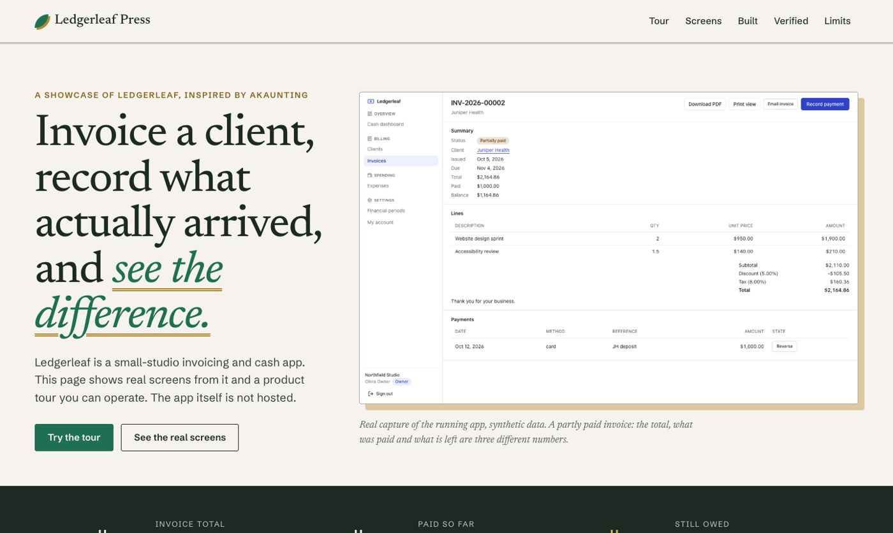

CRM · Invoices and payments · 2026-10
Ledgerleaf: invoiced versus actually received
Invoice a client, record what actually arrived, and see the difference.

The CRM itself is private and not hosted: the public repo and the showcase site contain only the showcase source. Every screenshot is a real capture of the running app with synthetic data; the in-page tour is a labeled illustration of the app's own rules, not a live backend. Original implementation inspired by Akaunting; no affiliation.
01 — The problem
A freelancer or small studio bills clients, tracks expenses and needs to know how much cash has really arrived, without invoice numbers repeating, issued documents changing, or a payment being counted twice.
Defining workflow: Issue a client invoice, download its PDF, record a partial payment and an expense, check the remaining balance and the cash dashboard, then settle the invoice. Invoices issued at the same moment never share a number.
02 — What I built
One of eleven independent CRM MVPs in a single monorepo, each with its own database, migrations, tests and review packet. This one is inspired by Akaunting and is called Ledgerleaf.
- Invoices with lines, discount and tax in integer cents (half up, once per figure), gapless numbers from a locked counter, and an immutable snapshot taken at issue time
- Partial payments under a row lock with a database no-overpayment rule, an idempotent payment command, and owner-only reversal that keeps who, when and why
- PDF and print views rendered from the stored snapshot; invoice email through local SMTP, off until configured
- Expenses with categories and content-validated private receipts; financial periods that refuse dates inside a closed month
- A cash-basis dashboard that shows invoiced total and cash received as different numbers, with net cash and aged receivables
03 — How it was built
- 01
Specify before building
An acceptance document names the persona, the bounded scope, what is deferred, and ties every required feature to evidence (a test, an end-to-end journey or a recorded check).
- 02
Model the database so the rules hold even if the code is wrong
A Prisma schema plus a hand-written migration of CHECK constraints, composite foreign keys that pin every record to its workspace, and triggers. The tests try to break these from raw SQL.
- 03
Build the distinguishing workflow through every layer
Invoices with lines, discount and tax in integer cents (half up, once per figure), gapless numbers from a locked counter, and an immutable snapshot taken at issue time
- 04
Prove it in a fresh clone
20 gate checks pass and 0 fail in a fresh clone of commit 158bf70109: 7 unit, 39 integration against a real PostgreSQL, 16 browser tests on the production build, container start, a live black-box check, restart persistence, backup and restore, and a production-dependency audit.
- 05
Review it as an independent reader would
A review packet lists what is implemented, what is measured, what was fixed on the way, and every known limit and release blocker, so nothing here is claimed beyond its evidence.
04 — Results
20 gate checks pass and 0 fail in a fresh clone of commit 158bf70109: 7 unit, 39 integration against a real PostgreSQL, 16 browser tests on the production build, container start, a live black-box check, restart persistence, backup and restore, and a production-dependency audit.
Screenshots on the showcase site are real captures at 1440, 768 and 390 pixels wide, taken from the production build with synthetic data.
05 — What I'd do next
- USD only, one tax rate per invoice; no recurring invoices, credit notes, quotes or purchase bills
- No bank feed or payment processing: a payment is something a person records, not money collected
- Closing a period is a guard against accidental edits, not an audit-grade lock
- Receipts need a persistent volume in production; email is off unless SMTP is configured; not production-ready: no TLS, proxy or monitoring provisioned